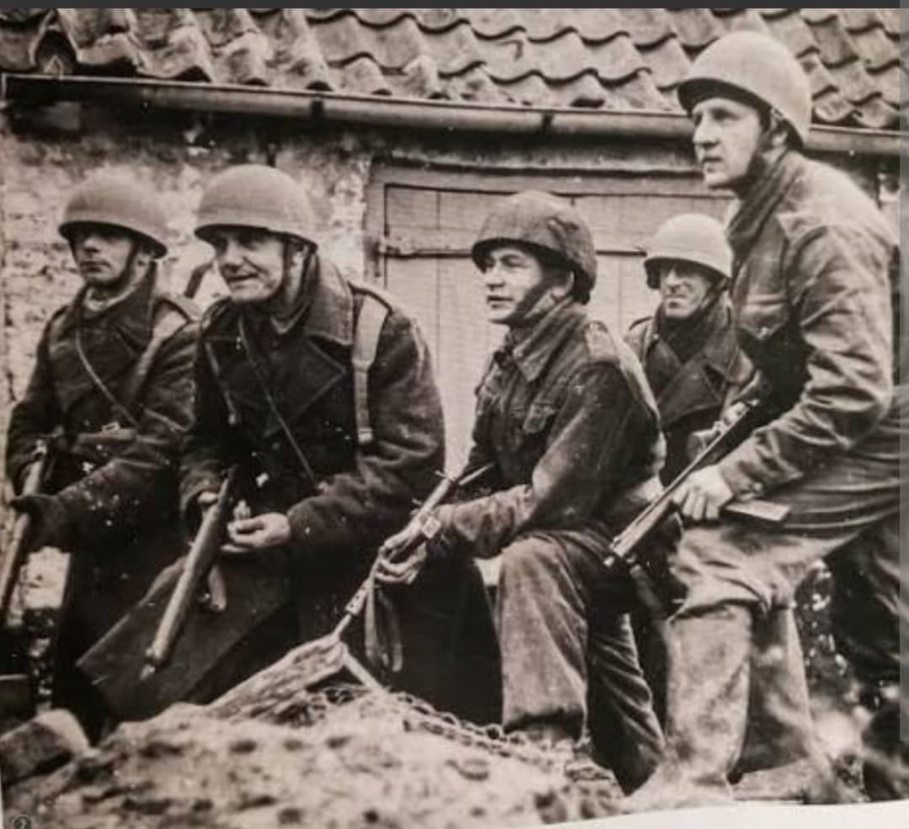
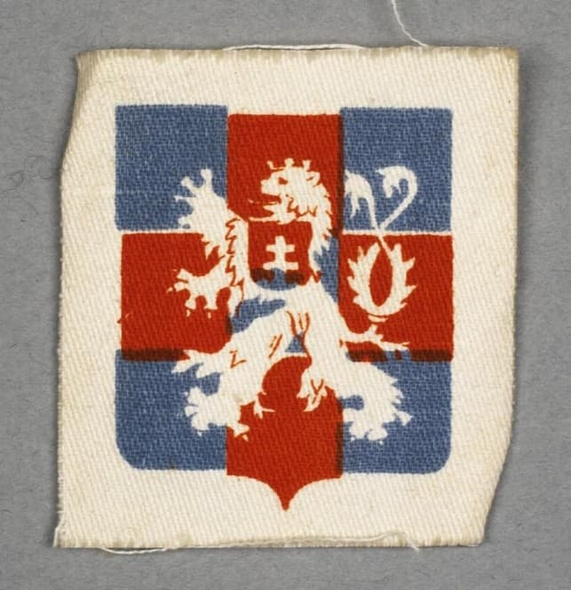
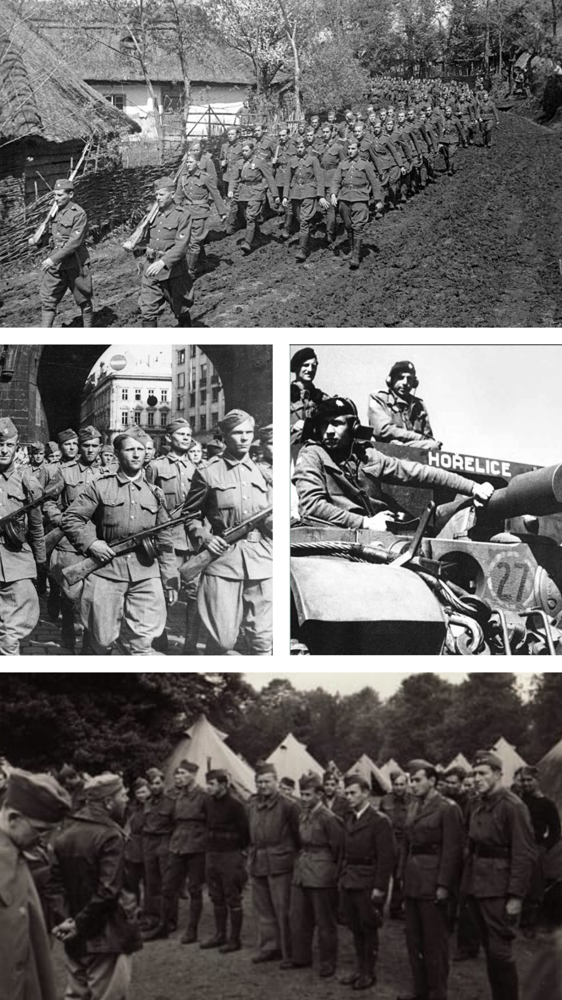

La lutte pour la souveraineté : des as de la RAF et l'opération Anthropoid au siège de Dunkerque et aux combats du front de l'Est

Malgré le démantèlement de la Tchécoslovaquie à la suite des accords de Munich et l'occupation nazie de 1939, des milliers de soldats, d'atypiques patriotes et d'aviateurs tchécoslovaques ont refusé la défaite. Évadés par la Pologne, la France ou le Moyen-Orient, ils ont formé les Forces tchécoslovaques libres sous l'autorité du gouvernement en exil d'Edvard Beneš.
Engagés sur tous les fronts — dans les cieux de la bataille d'Angleterre, dans le désert de Tobrouk, lors du siège de Dunkerque ou sur le front de l'Est —, les Tchécoslovaques ont fait preuve d'une bravoure exceptionnelle pour restaurer la liberté de leur patrie.
Après avoir vaillamment combattu lors de la campagne de France en 1940, les unités tchécoslovaques sont évacuées vers la Grande-Bretagne et le Moyen-Orient. Elles s'organisent notamment sous la forme de la 1re Brigade blindée indépendante tchécoslovaque et de quatre escadrons célèbres de la Royal Air Force (RAF Squadrons 310, 311, 312 et 313).
Leur insigne emblématique arbore le lion rampant à deux queues de Bohême portant l'écu de la Slovaquie, souligné par la devise nationale « Pravda vítězí » (La vérité vaincra).

Les pilotes tchécoslovaques de la RAF sont devenus légendaires dès la **bataille d'Angleterre**, abattant des dizaines d'avions allemands avec une ténacité reconnue par le Fighter Command.
L'acte de résistance tchécoslovaque le plus marquant demeure l'Opération Anthropoid : le 27 mai 1942 à Prague, les parachutistes Josef Gabčík et Jan Kubiš, entraînés en Grande-Bretagne et infiltrés en secret, exécutent Reinhard Heydrich, l'un des plus hauts dignitaires nazis et concepteur de la « Solution finale ».

À l'automne 1944, la 1re Brigade blindée tchécoslovaque, menée par le général **Alois Liška**, se voit confier le siège de la forteresse allemande de **Dunkerque**. Elle contiendra et encerclera fermement la puissante garnison nazie de la poche jusqu'à sa capitulation le 9 mai 1945.
Simultanément, sur le front de l'Est, le 1er Corps d'armée tchécoslovaque (commandé par Ludvík Svoboda) combat aux côtés de l'Armée rouge, s'illustrant lors de la sanglante bataille du col de Dukla pour forcer l'entrée en Slovaquie et libérer le territoire national.
Page du Musée HOP WW2 – Section Unités & Divisions